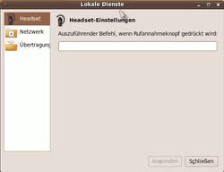

Blueman
Dieser Artikel wurde für die folgenden Ubuntu-Versionen getestet:
Ubuntu 14.04 Trusty Tahr
Zum Verständnis dieses Artikels sind folgende Seiten hilfreich:
 Blueman
Blueman  ist ein alternativer Bluetooth-Manager für Xfce und LXDE, der auf GTK setzt. Blueman kann dabei mittels Plugins erweitert werden. Neben der "normalen" Datenübertragung (Senden/Empfangen/Durchsuchen) mittels OBEX beherrscht Blueman auch "Dial-up Networking" (DUN) oder Personal Area Networking (PAN). Weiterhin kann Blueman als Schnittstelle für Ein- und Ausgabegeräte, wie Bluetooth-Tastatur, -Maus, oder -Headset genutzt werden.
ist ein alternativer Bluetooth-Manager für Xfce und LXDE, der auf GTK setzt. Blueman kann dabei mittels Plugins erweitert werden. Neben der "normalen" Datenübertragung (Senden/Empfangen/Durchsuchen) mittels OBEX beherrscht Blueman auch "Dial-up Networking" (DUN) oder Personal Area Networking (PAN). Weiterhin kann Blueman als Schnittstelle für Ein- und Ausgabegeräte, wie Bluetooth-Tastatur, -Maus, oder -Headset genutzt werden.
Achtung!
Es kann zu Problemen kommen, wenn der Dienst "bluetooth" entweder manuell gestoppt wird oder über die Schaltfläche "Bluetooth ausschalten" in der GUI von Blueman deaktiviert wird. In der Folge ist es nicht mehr möglich, Blueman wieder zu aktivieren (458091 bzw. 411481). Vereinzelt gelingt offenbar ein Neustart mittels [1][2]:
sudo hciconfig hci0 up
Merkmale im Überblick¶
Dienste an
/dev/rfcomm-Ports bindenBluetooth-Headsets verbinden und benutzen
Bluetooth-Geräte als Favoriten speichern
Alle sichtbaren (erreichbaren) Geräte anzeigen
Informationen über lokale und entfernte (bereits bekannte) Geräte anzeigen
Handyspeicher (intern und erweiterbar) durchsuchen, füllen und löschen
Dateien über Bluetooth empfangen
Einen Freigabe-Ordner für die Dateifreigabe via OBEX/FTP bestimmen
Rechner fernsteuern/Handy als Fernbedienung nutzen
Installation¶
Blueman befindet sich in den Paketquellen, es muss das folgende Paket installiert werden [3]:
blueman (universe)
 mit apturl
mit apturl
Paketliste zum Kopieren:
sudo apt-get install blueman
sudo aptitude install blueman
Man erhält die Version 1.23. Neue Versionen sind über die Projektseite erhältlich, müssen aber selbst aus dem Quellcode kompiliert werden.
Außerdem gibt es zusätzliche Pakete, die bei der Nutzung von Blueman hilfreich sein können:
bluez
obex-data-server
mit apturl
Paketliste zum Kopieren:
sudo apt-get install bluez obex-data-server
sudo aptitude install bluez obex-data-server
Bedienung¶
Blueman kann nach der Installation mit blueman-manager gestartet werden [4].
Verbindung herstellen¶
Um Bluetooth zu nutzen muss nun – ebenso wie unter Bluetooth/Einrichtung beschrieben, zunächst der Rechner/Blueman mit einem Bluetooth-fähigen Gerät (Headset, Handy, etc.) verbunden werden.
Im Einzelnen muss dazu zuerst das entsprechende Gerät gesucht werden. Über die Schaltfläche "Suche" sucht das Programm nach allen Mobiltelefonen und anderen Bluetooth-fähigen Geräten. Alle Geräte, die einmal mit dem Rechner verbunden waren, werden zukünftig unter Bluetooth-Geräte angezeigt. Wählt man nun ein Gerät aus, kann man mit  -Klick spezifische Einstellungen für jedes Gerät festlegen. Die meisten Funktionen von Blueman können sowohl über das Bluetooth-Icon im Systemtray als auch über den Gerätemanager aufgerufen werden und sind weitestgehend selbsterklärend.
-Klick spezifische Einstellungen für jedes Gerät festlegen. Die meisten Funktionen von Blueman können sowohl über das Bluetooth-Icon im Systemtray als auch über den Gerätemanager aufgerufen werden und sind weitestgehend selbsterklärend.
Über Adapter -> Einstellungen kann man den Bluetooth-Adapter auf "Immer sichtbar", "Nicht sichtbar" und "Vorübergehend sichtbar" stellen. Auch der Name und die Geräte Klasse des Bluetooth-Adapters können hier angepasst werden. Um die optimale Verbindung in beide Richtungen sicherzustellen ist es sinnvoll, die Einstellung auf "Immer sichtbar" einzustellen.
Über "Koppelung" kann man nun eine Verbindung zu dem Gerät herstellen. Mittels "Browse" kann auf das Gerät mit einem Dateimanager wie z.B. Nautilus auf die Speicherkarte und den internen Speicher zugegriffen werden. 
NAP/DUN einrichten¶
Ab der Version 0.8.x von NetworkManager funktioniert das Plugin "NMPANSupport" ohne weitere Veränderungen. (Gleiches gilt im Übrigen auch für DUN). Um diese Dienste zu nutzen muss zunächst eine Verbindung zwischen dem Handy und Blueman hergestellt werden.
Über -Klick auf das Blueman-Applet kann "Lokale Dienste" aufgerufen werden und unter dem Reiter "Netzwerk" kann nun der "Network Access Point" aktiviert und eingerichtet werden. Danach müssen noch die jeweiligen Einstellungen im Handy vorgenommen werden. Anschließend sollte die Internet-Anbindung vom Handy direkt über Bluetooth und NetworkManager funktionieren.
Um das Handy als Modem einzurichten kann bei -Klick auf das Gerät, über "Serielle Anschlüsse -> Einwahldienst" aufgerufen werden. Die Einrichtung verläuft danach nahezu automatisch. Nach der Bestätigung auf dem Handy, um die Nutzung zu erlauben, wird für die Änderung der Konfiguration der Netzwerkschnittstelle noch die Eingabe des Passworts nötig.
Die notwendigen Einstellungen im Handy um NAP/DUN nutzen zu können sind leider kaum zu beschreiben, da je nach Modell unterschiedliche Einstellungen nötig werden.
OBEX/FileSharing/Dateien senden und empfangen¶
Um Dateien an ein Handy zu senden genügt es – nachdem man eine Verbindung hergestellt hat – auf "Datei senden" zu klicken, oder das Handy mittels OBEX/FTP direkt im jeweiligen Dateimanager einzubinden. Das Handy wird in letzterem Fall direkt als Wechselspeicher eingebunden. Blueman ermöglicht dabei sogar den Zugriff auf den internen Speicher. Siehe auch Problembehebung.
Über die entsprechenden Einstellungen unter -Klick auf Blueman-Applet "Lokale Dienste -> Übertragung" kann auch ein Ordner vom eigenen Rechner freigegeben werden, der nun auch vom Handy aus durchsucht und genutzt werden kann. Außerdem kann dieser Ordner für den Datei-Empfang vom Handy aktiviert werden. Werden mehrere Dateien zum Rechner gesendet, so gilt die Auswahl "Annehmen / Ablehnen" in einem aufpoppenden Benachrichtigungsfeld gleich für alle.
Rechner fernsteuern/Handy als Fernbedienung nutzen¶
Über "Gerät -> Eingabe-Dienst verbinden" kann man das Handy (sofern diese Funktion unterstützt wird) als Fernsteuerung für den Desktop nutzen. In der Regel sind Anwendungen zur Steuerung von Präsentationen, dem Desktop und eventuell dem Medienplayer vorhanden. Nach Aktivierung der Funktion im Blueman-Manager folgt wiederum die Bestätigungsfrage im Handy. danach sollte automatisch die Fernsteuerungsanwendung im Handy starten.
Headset einrichten¶
Um ein Headset mit Blueman zu verbinden geht man genauso vor, wie unter "Verbindung herstellen" beschrieben. Dabei ist zu beachten, dass die Kennzahl im Headset in der Regel nicht eingegeben werden kann, sondern voreingestellt ist. Deshalb muss man entweder die Anleitung des Geräts lesen, oder aber die üblichen Kombinationen "1234", "1111", "0000" ausprobieren. Mit einem Klick auf "Gerät -> Headset-Dienst verbinden" wird danach die Audioeingabe aktiviert. Danach kann über -Klick auf Blueman-Applet "Lokale Dienste -> Headset" die Reaktion des Rechners auf den Rufannahmeknopf des Headsets festgelegt werden.
Liste von DUN/NAP getesteten Geräten¶
Unter dieser Auflistung können sämtlichen Handymodelle aufgelistet werden, bei denen NAP/DUN unterstützt wird. (Idealerweise sollte auch noch einen Link zur Beschreibung der Einrichtung eingefügt werden.)
Sony Ericsson W580i NAP

Sony Ericsson W810i DUN (sofern vom Netzbetreiber ein Internetprofil geliefert worden ist, ist keine weitere Konfiguration im Handy nötig)
Sony Ericsson K800i (vom Handy per Bluetooth zum PC verbinden, dann wird Bluetooth-Datenkonto automatisch erstellt)
Problembehebung¶
Dateien können nicht aus dem Handy kopiert werden¶
In Ubuntu 14.04 gibt es u.a. einen Bug, welcher beim durchsuchen des Handys vom PC aus verhindert, dass Dateien auf direktem Wege mittels Dateimanager kopiert werden können. Die entsprechenden Dateien werden zwar angezeigt und können mittels -Klick auf sie und "kopieren" in die Zwischenablage kopiert werden, sobald man sie aber im Zielverzeichnis einfügen möchte erscheint die Fehlermeldung "Another operation in progress". Die Dateien können also nicht eingefügt werden.
Als Workaround kopiert man die entsprechenden Dateien anstatt in einen Dateimanager einfach in ein Terminal: [1]
In Letzterem per cd ins Zielverzeichnis navigieren,
dann cp eintippen und ein Leerzeichen,
die entsprechenden Dateien per "Drag and Drop" aus dem Dateimanager in das Terminal ziehen,
noch ein Leerzeichen eintippen, dahinter ein "." und abschließend mit ⏎ bestätigen.
Im Terminal sähen die entsprechende Befehle dann z.B. folgendermaßen aus:
cd ~/Bluetooth cp '/run/user/1000/gvfs/obex:host=%5B00%3A1A%3A89%3ADB%3AAC%3A55%5D/E:/Sounds/Digital/Soundclip 09.wav' '/run/user/1000/gvfs/obex:host=%5B00%3A1A%3A89%3ADB%3AAC%3A55%5D/E:/Sounds/Digital/Soundclip 10.wav' .
Falls "Drag and Drop" nicht funktioniert kann man sich auch im Dateimanager direkt über /run/user/1000/gvfs/ weiter zum entsprechenden Verzeichnis hangeln, die Dateien dann nacheinander einzeln per -Klick kopieren und ins Terminal per -Klick einfügen.
Autostart Deaktivieren¶
Bei manchen Ubuntu-Derivanten befindet sich Blueman im Autostart. Möchte man das Applet im Autostart behalten, aber den damit verbundenen Autostart des Adapters deaktivieren, müssen die folgenden beiden Schritte durchgeführt werden:
Die Datei /etc/bluetooth/main.conf mit einem Editor öffnen [5] und in der letzten Zeile
AutoEnable=false
setzen. Dann ist noch der Befehl
gsettings set org.blueman.plugins.powermanager auto-power-on false
auszuführen [1].
Links¶
Blueman
- Arch-WikiBlueman – Bessere Bluetooth-Verwaltung für Linux
- Tecchannel, 03/2009Bluetooth
 Übersichtsartikel
Übersichtsartikel
- Erstellt mit Inyoka
-
 2004 – 2017 ubuntuusers.de • Einige Rechte vorbehalten
2004 – 2017 ubuntuusers.de • Einige Rechte vorbehalten
Lizenz • Kontakt • Datenschutz • Impressum • Serverstatus -
Serverhousing gespendet von